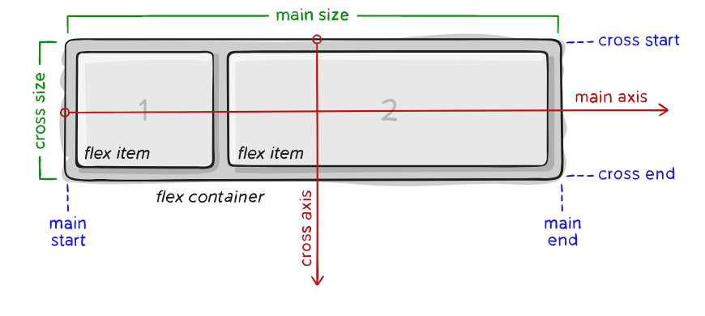
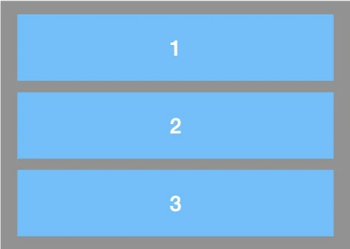
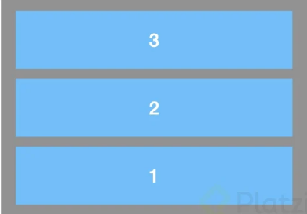
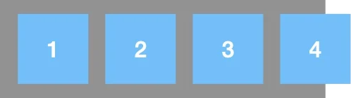
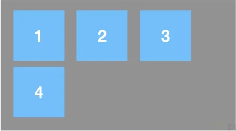
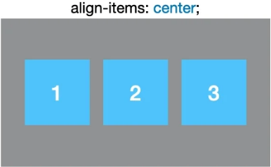
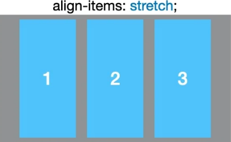
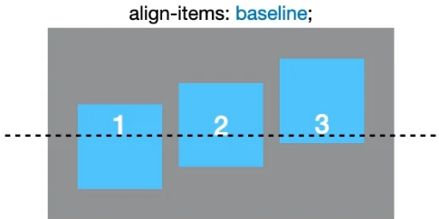

Flex box
Modelo de diseño CSS3 en el que los elementos adaptables dentro de un contenedor se organicen automáticamente dependiendo del tamaño de la pantalla o del dispositivo. El elemento padre que sostiene todos los elementos flex a través de dos ejes se le conoce como Flex Container y cualquier elemento hijo directo que se mantenga directo del contenedor flex se considera un Flex Ítem.
¿Que se puede hacer con Flexbox?
- - Diseños flexibles con menos código.
- - Alinear los elementos de manera vertical y horizontal.
- - Reordenar contenido sin tocar el HTML.
Conceptos básicos
Los elementos básicos de Flexbox son:1. Contenedor. Existe un elemento padre que es el contenedor, ya que tendrá en su interior cada uno de los ítems flexibles y adaptables.
-Eje principal. Los contenedores flexibles tendrán una orientación principal específica. Por defecto es horizontal con el valor row.
-Eje secundario. De la misma forma que el eje principal, solo que esta orientación será perpendicular a la principal. Si la principal es horizontal, la secundaría será vertical con el valor column, y viceversa.
2.Ítem. bCada uno de los hijos flexibles que tendrá el contenedor en su interior.
Dirección de los ejes
Existen dos propiedades principales para manipular la dirección y comportamiento de los ítems a lo largo del eje principal del contenedor que son flex-direction y flex-wrap.Mediante la primera propiedad podemos modificar la dirección del eje principal del contenedor para que se oriente en horizontal (por defecto) o en vertical.
flex-direction: row

flex-direction: row-reverse
flex-direction: column
flex-direction: column-reverse
Mientras que con la segunda podemos especificar el comportamiento del contenedor respecto a evitar que se desborde o permitir que lo haga.
flex-wrap: nowrap
flex-wrap: wrap
Propiedades de alineación
Flexbox tiene propiedades para disponer de los ítems dependiendo de como sea nuestro diseño. A continuación describiremos cada una de estas propiedades.Alineación al eje principal
La propiedad que nos permite alinear los ítems al eje principal es justify-content y sus valores, así como la visualización de cómo se aplican estos valores a los ítems son los siguientes.

 

Alineación al eje principal
De igual forma que para el eje principal tenemos una propiedad que nos permite alinear los ítems en el eje secundario y es align-items y sus valores, así como la visualización de cómo se aplican estos valores a los ítems son los siguientes.
Castro González, J. (2020). Aplicación web para la evaluación y planificación de menús escolares.